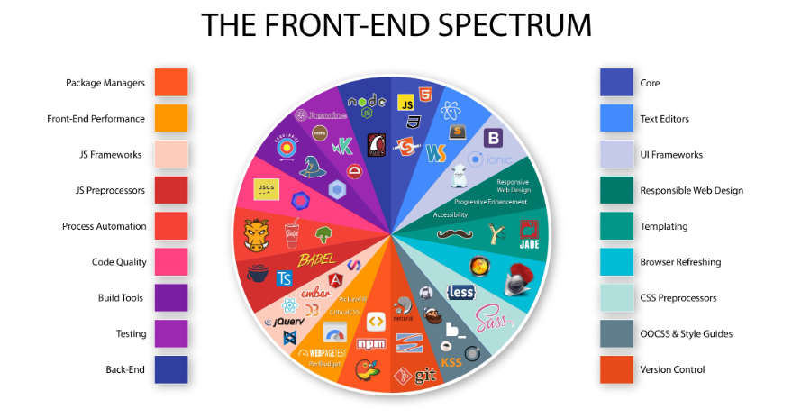
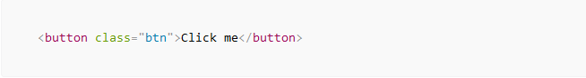
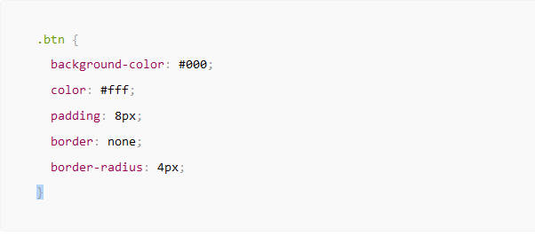
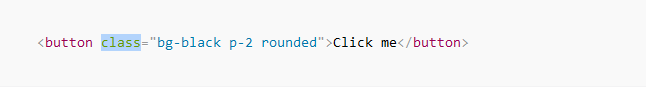
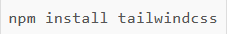
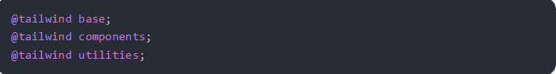
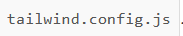
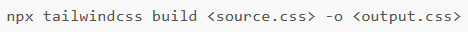
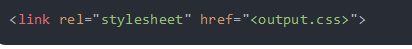

TECHNOLOGIES FRONT-END
WEB ET MOBILEIntroduction
Lors du développement d’une application mobile ou web, le côté client ou front-end revêt une grande importance car l’utilisateur n’en fait qu’une expérience. Par conséquent, pour améliorer l’impression de votre application devant un utilisateur, un développeur ne peut pas faire de compromis sur la qualité du développement front-end. Pour offrir une excellente expérience utilisateur côté client, les langages front-end jouent un rôle important.
Qu’est-ce que le Front-End ?
Le front-end c’est la partie du code qui est reçue par le client. Je rappelle que le client
c’est
notre navigateur Web. Il s’agit finalement des éléments du site web que
l’on aperçoit à
l’écran et
avec lesquels on pourra interagir. En d’autres termes, tout ce que l’utilisateur d’une
application
voit est le front-end, comme les menus de navigation, le modèle d’application et les boutons,
etc.
FRONT-END WEB
Qu'est ce que TailwindCSS ?
Tailwind CSS est un framework utility-first CSS (feuilles de style en cascade) avec des classes prédéfinies que vous pouvez utiliser pour construire et concevoir des pages web directement dans votre balisage. Il vous permet d’écrire du CSS dans votre HTML sous la forme de classes prédéfinies.

Qu'est ce qu'un framework ?
un framework est un outil qui fournit des composants réutilisables et prêts à l’emploi construits à partir des fonctionnalités d’un outil déjà existant. L’objectif général de la création de frameworks est d’augmenter la vitesse de développement en faisant moins de travail.
Qu’est-ce qu’un framework CSS utility-first ?
Lorsque nous disons « utility-first CSS », nous faisons référence à des classes dans notre balisage (HTML) avec des fonctionnalités prédéfinies. Cela implique que vous n’avez qu’à écrire une classe à laquelle sont attachés des styles prédéfinis, et ces styles seront appliqués à l’élément.
Utilisation
Nous allons vous montrer un exemple. Ici, nous allons créer un bouton avec des coins arrondis et
un texte qui dit « Clic me » Voici à quoi ressemblera le bouton :
Nous allons d’abord faire cela en utilisant le CSS vanilla, puis en utilisant les classes
utilitaires disponibles dans le CSS Tailwind.
AVEC CSS
Nous avons donné aux balises de bouton la classe btn, qui sera stylisée à l’aide d’une feuille de style externe. C’est-à-dire :

Avec Tailwind CSS :

Installation
Il existe deux méthodes pour installer Tailwind CSS. La première consiste à télécharger les fichiers ou utiliser un cdn. Cette méthode est certes rapide, mais n’est que peu recommandé, car vous chargez l’intégralité du framework (ce qui le rend plus lourd), sans pouvoir le personnaliser. Dans ce cas, vous vous limitez vous-même. Voyons plutôt la bonne pratique.
- Préparer son environnement pour accueillir Tailwind CSS :
- Nous allons utiliser NPM. Veillez à bien l’installer sur votre machine.
Depuis le terminal, vous devez vous rendre à la racine de votre projet et exécuter une commande
npm :

Maintenant, créez un fichier CSS. Il n’est pas à inclure dans le HTML. À l’intérieur de celui-ci
nous insérer du code de base pour appeler Tailwind :

Enfin, nous allons créer un fichier
.
Ce fichier permettra de configurer Tailwind pour votre projet.
À présent, nous allons compiler le code pour rendre Tailwind utilisable.
Toujours depuis la racine de votre projet, exécutez la commande suivante depuis le terminal :

Le fichier source.css est celui que nous avons créé plus haut. Le fichier ouput.css est le nom
que vous souhaitez donner au fichier CSS généré par la compilation, qui, lui, sera à insérer
dans le HTML. Notez que ces deux fichiers peuvent porter le nom que vous souhaitez.
Enfin, insérez le fichier CSS dans le HTML.
